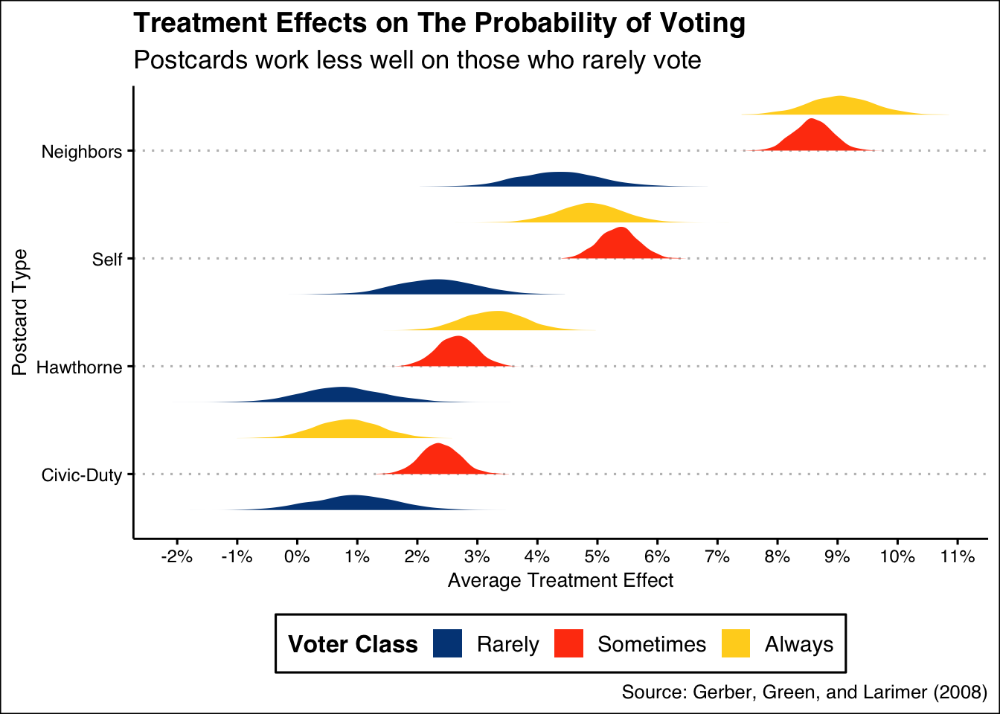

8 N Parameters
This chapter is still a DRAFT.
It may be time to move from assuming that research has been honestly conducted and reported to assuming it to be untrustworthy until there is some evidence to the contrary. – Richard Smith, former editor of the British Medical Journal.
Having created models with one parameter in Chapter 3, two parameters in Chapter 4, three parameters in Chapter 5, four parameters in Chapter 6 and five parameters in Chapter 7, you are now ready to make the jump to \(N\) parameters.
In this chapter, we will consider models with many parameters and the complexities that arise therefrom. As our models grow in complexity, we need to pay extra attention to basic assumptions like validity, stability, representativeness, and unconfoundedness. It is easy to jump right in and start interpreting! It is harder, but necessary, to ensure that our models are really answering our questions.
Imagine you are running for Governor in Texas and want to do a better job of getting your voters to vote. How can you encourage voters to go out to the polls on election day?
8.1 Wisdom
As you research ways to increase voting, you come across a large-scale experiment showing the effect of sending out a voting reminder that “shames” citizens who do not vote. You are considering sending out a “shaming” voting reminder yourself.
We will be looking at the shaming tibble from the primer.data package, sourced from “Social Pressure and Voter Turnout: Evidence from a Large-Scale Field Experiment” (pdf) by Gerber, Green, and Larimer (2008). You can, and should, familiarize yourself with the data by typing ?shaming.
Recall our initial question: how can we encourage voters to go out to the polls on election day? We now need to translate this into a more precise question, one that we can answer with data.
Our question:
What is the causal effect on voting of different postcards on Texans of different levels of political engagement?
8.2 Preceptor Table
The phrasing of the question — especially the phrase “causal effect” — makes it obvious that we need a causal, rather than a predictive, model. The units of our Preceptor Table are individual voters in Texas around the time of the next election. The outcome is voting or not voting. The covariates include, at least, measures of political engagement. The treatments are postcards of various types. The potential outcomes are the involve whether or not the person voted, depending on the treatment received.
Recall the definition of a Preceptor Table. It is the smallest possible table such that, if no data were missing, the calculation of all quantities of interest would be trivial. The causal effect, for each individual, is the difference in voting behavior under treatment versus control. Consider:
| Preceptor Table | ||||
| ID | Outcomes | Covariates | ||
|---|---|---|---|---|
| Voting After Control | Voting After Treatment | Treatment | Engagement | |
1 |
1 |
1 |
Yes |
1 |
2 |
0 |
1 |
No |
3 |
… |
… |
… |
… |
… |
10 |
1 |
1 |
Yes |
6 |
11 |
1 |
0 |
Yes |
2 |
… |
… |
… |
… |
… |
N |
0 |
1 |
No |
2 |
Comments:
The more experience you get as a data scientist, the more that you will come to understand that the Four Cardinal Virtues are not a one-way path. Instead, we circle round and round. Our initial question, instead of being fixed forever, is modified as we learn more about the data, and as we experiment with different modeling approaches.
Indeed, the politician (our boss/client) running for Texas governor probably did not start out with that question. After all, his main question is “How do I win this election?” That big picture goal would lead, over and over again, to more specific questions regarding strategy, including how best to motivate his supporters to vote.
The same iterative approach applies to the Preceptor Table. The above is just our first version. Once we look more closely at the data, we will discover that there are multiple treatments. In fact, we have a total of 5 potential outcomes in this example.
Should we go back and change the Preceptor Table? No! The Preceptor Table is just a tool we use to fix ideas in our own heads. We never talk about Preceptor Tables with anyone else. Indeed, you won’t ever see the words “Preceptor Table” outside of this Primer and related work.
Why is there only one covariate (in addition to the treatment)? Because the question only specifies that one. Any covariates mentioned in the question must be included in the Preceptor Table because, without that information for all units, we can’t answer the question.
8.2.1 EDA of shaming
After loading the packages we need, let’s perform an EDA, starting off by running glimpse() on the shaming tibble from the primer.data package.
Code
glimpse(shaming)Rows: 344,084
Columns: 15
$ cluster <chr> "1", "1", "1", "1", "1", "1", "1", "1", "1", "1", "1", "…
$ primary_06 <int> 0, 0, 1, 1, 1, 0, 1, 1, 0, 0, 1, 0, 1, 0, 1, 1, 0, 0, 1,…
$ treatment <fct> Civic Duty, Civic Duty, Hawthorne, Hawthorne, Hawthorne,…
$ sex <chr> "Male", "Female", "Male", "Female", "Female", "Male", "F…
$ age <int> 65, 59, 55, 56, 24, 25, 47, 50, 38, 39, 65, 61, 57, 37, …
$ primary_00 <chr> "No", "No", "No", "No", "No", "No", "No", "No", "No", "N…
$ general_00 <chr> "Yes", "Yes", "Yes", "Yes", "Yes", "No", "Yes", "Yes", "…
$ primary_02 <chr> "Yes", "Yes", "Yes", "Yes", "Yes", "No", "Yes", "Yes", "…
$ general_02 <chr> "Yes", "Yes", "Yes", "Yes", "Yes", "No", "Yes", "Yes", "…
$ primary_04 <chr> "No", "No", "No", "No", "No", "No", "No", "No", "No", "N…
$ general_04 <chr> "Yes", "Yes", "Yes", "Yes", "Yes", "Yes", "Yes", "Yes", …
$ hh_size <int> 2, 2, 3, 3, 3, 3, 3, 3, 2, 2, 1, 2, 2, 1, 2, 2, 2, 2, 1,…
$ hh_primary_04 <dbl> 0.0952381, 0.0952381, 0.0476190, 0.0476190, 0.0476190, 0…
$ hh_general_04 <dbl> 0.8571429, 0.8571429, 0.8571429, 0.8571429, 0.8571429, 0…
$ neighbors <int> 21, 21, 21, 21, 21, 21, 21, 21, 21, 21, 21, 21, 21, 21, …glimpse() gives us a look at the raw data contained within the shaming data set. At the very top of the output, we can see the number of rows and columns, or observations and variables respectively. We see that there are 344,084 observations, with each row corresponding to a unique respondent. ?shaming provides more details about the variables.
Variables of particular interest to us are sex, hh_size, and primary_06. The variable hh_size tells us the size of the respondent’s household, sex tells us the sex of the respondent, and primary_06 tells us whether or not the respondent voted in the 2006 primary election.
There are a few things to note while exploring this data set. You may – or may not – have noticed that the only response to the general_04 variable is “Yes”. In their published article, the authors note that “Only registered voters who voted in November 2004 were selected for our sample.” After this, the authors found their history then sent out the mailings. Thus, anyone who did not vote in the 2004 general election is excluded, by definition.
The dependent variable is primary_06, which is a variable coded either 0 or 1 for whether or not the respondent voted in the 2006 primary election. This is the dependent variable because the authors are trying to measure the effect that the treatments have on voting behavior in the 2006 general election. It is also the dependent variable from our point of view since our question also deals with voting behavior.
The treatment variable is a factor variable with 5 levels, including the control. Our focus is on those treatments, and on their causal effects, if any. Consider:
Code
shaming |>
count(treatment)# A tibble: 5 × 2
treatment n
<fct> <int>
1 No Postcard 191243
2 Civic Duty 38218
3 Hawthorne 38204
4 Self 38218
5 Neighbors 38201Four types of treatments were used in the experiment, with voters receiving one of the four types of mailing. All of the mailing treatments carried the message, “DO YOUR CIVIC DUTY - VOTE!”.
The first treatment, Civic Duty, also read, “Remember your rights and responsibilities as a citizen. Remember to vote.” This message acted as a baseline for the other treatments, since it carried a message very similar to the one displayed on all the mailings.
In the second treatment, Hawthorne, households received a mailing which told the voters that they were being studied and their voting behavior would be examined through public records. This adds a small amount of social pressure.
In the third treatment, Self, the mailing includes the recent voting record of each member of the household, placing the word “Voted” next to their name if they did in fact vote in the 2004 election or a blank space next to the name if they did not. In this mailing, the households were also told, “we intend to mail an updated chart” with the voting record of the household members after the 2006 primary. By emphasizing the public nature of voting records, this type of mailing exerts more social pressure on voting than the Hawthorne treatment.
The fourth treatment, Neighbors, provides the household members’ voting records, as well as the voting records of those who live nearby. This mailing also told recipients, “we intend to mail an updated chart” of who voted in the 2006 election to the entire neighborhood.
8.2.2 Validity
8.2.3 Population
One of the most important components of Wisdom is the concept of the “population”. Recall the questions we asked earlier:
As we have discussed before, the population is not the set of people, or voters, for which we have data. This is the dataset. Nor is it the set of voters about whom we would like to have data. Those are the rows in the ideal Preceptor Table. The population is the larger — potentially much larger — set of individuals which include both the data we have and the data we want. Generally, the population will be much larger than either the data we have and the data we want.
In this case, we are viewing the data from the perspective of someone running for Governor this year that wants to increase voter turnout. We want to increase turnout now, not for people voting in 2006! We also may want to increase turnout in those citizens who are not registered to vote, a group that is excluded from our dataset. Is it reasonable to generate conclusions for this group? Most likely, no. However, we have limited data to work with and we have to determine how far we are willing to generalize to other groups.
It is a judgment call, a matter of Wisdom, as to whether or not we may assume that the data we have and the data we want to have (i.e., the ideal Preceptor Table) are drawn from the same population.
Even though the original question is about “voters” in general, and does not specifically refer to specific states in which we might be interested, we will assume that the data we have for random voters is, uh, representative enough of the population we are interested in. If we did not believe that, then we should stop right now. The major part of Wisdom is deciding what questions you can’t answer because of the data you just don’t have.
8.3 Justice

Justice includes the creation of the Population Table, followed by a discussion about the assumptions of stability, representativeness and unconfoundedness. It concludes by determining the mathematical structure of the data generating mechanism.
8.3.1 The Population Table
The Population Table shows rows from three sources: the Preceptor Table, the data, and the population from which the rows in both the Preceptor Table and the data were drawn.
The rows from our data have everything: the covariates and the outcomes. The covariates here will be Michigan for state and 2006 for year, since these are the pieces of information that are included in our data. Of course, we still do not have values for Treatment minus Control, since we cannot observe one subject under two conditions.
The rows from the population have no data. These are subjects which fall under our desired population, but for which we have no data. As such, all rows are missing.
| Source | Sex | Year | State | Outcomes | |
|---|---|---|---|---|---|
| Treatment | Control | ||||
… |
? |
1990 |
? |
? |
? |
… |
? |
1995 |
? |
? |
? |
… |
… |
… |
… |
… |
… |
Data |
Male |
2006 |
Michigan |
Did not vote |
? |
Data |
Female |
2006 |
Michigan |
? |
Voted |
… |
… |
… |
… |
… |
… |
… |
? |
2010 |
? |
? |
? |
… |
? |
2012 |
? |
? |
? |
… |
… |
… |
… |
… |
… |
Preceptor Table |
Female |
2021 |
Texas |
? |
? |
Preceptor Table |
Female |
2021 |
Texas |
? |
? |
… |
… |
… |
… |
… |
… |
… |
? |
2026 |
? |
? |
? |
… |
? |
2030 |
? |
? |
? |
8.3.2 Validity
To understand validity in regards to the Population Table, we must first recognize an inherent flaw in any experiment design: no two units receive exactly the same treatment.
We might be thinking: well, surely two postcards are the same? But, they aren’t! The postcards sent from our data were sent with information relevant to 2006 — a different candidate, different language, different syntax. A postcard sent in 2021, even if we used the exact same language, would be encouraging a new candidate with new reform and differing policies.
Thus, despite the fact that two units are in the same treatment — that is, receiving a postcard — they have very different versions of that treatment. Indeed, there are an infinite number of possible treatments. This is why it is so important to define our estimand clearly.
8.3.3 Stability
Stability means that the relationship between the columns is the same for three categories of rows: the data, the Preceptor table, and the larger population from which both are drawn.
With something like height, it is much easier to assume stability over a greater period of time. Changes in global height occur extremely slowly, so height being stable across a span of 20 years is reasonable to assume. Can we say the same for this example, where we are looking at voting behavior?
Is data collected in 2006 on voting behavior likely to be the same in 2021? Frankly, we don’t know! We aren’t sure what would impact someone’s response to a postcard encouraging them to vote. It is possible, for instance, that a postcard informing neighbors of voting status would have more of an effect on voting behavior during a pandemic, when you are more closely interacting with neighbors.
When we are confronted with this uncertainty, we can consider making our timeframe smaller. However, we would still need to assume stability from 2006 (time of data collection) to today. Stability allows us to ignore the issue of time.
8.3.4 Representativeness
This is a good time to consider what it really means to accept that our data is representative of our population. With that in mind, let’s break down our real, current question:
- We are running for governor in Texas in the year 2021. In this year and in the United States, we consider sending out a voting reminder postcard to citizens of voting age. Will this reminder encourage voting, and by how much?
Now, let’s break down our data from the shaming dataset:
- The data was gathered in Michigan prior to the August 2006 primary election. The population for the experiment was 180,002 households in the state of Michigan. The data only included those who had voted in the 2004 general election. Therefore, it did not include non-voters. The reminders were mailed to households at random.
So, how similar are these groups? Let’s start with some differences. * The data is from 2006. Our question is asking for answers from 2021. This is not a small gap in time. A lot changes in a decade and a half! * The data excludes all non-voters in the last election. Our question, which seeks to increase voting turnout in all citizens, would want for non-voters to be included. So, can we make any claims about those citizens? Probably not. * The data only includes voters from Michigan. We want to make inferences about Texas, or perhaps the United States as a whole. Is it within reason to do that?
Generally: if there was no chance that a certain type of person would have been in this experiment, we cannot make an assumption for that person.
The purpose of this section is to make us think critically about the assumptions we are making and whether those assumptions can be reasonably made. Though we will continue using this dataset in the remainder of the chapter, it is clear that we must make our predictions with caution.
8.3.5 Functional form
8.4 Courage

8.4.1 Set-up
Now, we will create an object named object_1 that includes a 3-level factor classifying voters by level of civic engagement.
Convert all primary and general election variables that are not already 1/0 binary to binary format.
Create a new column named
civ_engagethat sums up each person’s voting behavior up to, but not including, the 2006 primary.Create a column named
voter_classthat classifies voters into 3 bins: “Always Vote” for those who voted at least 5 times, “Sometimes Vote” for those who voted between 3 or 4 times, and “Rarely Vote” for those who voted 2 or fewer times. This variable should be classified as a factor.Create a column called
z_agewhich is the z-score forage.
Code
object_1 <- shaming |>
# Converting the Y/N columns to binaries with the function we made
# note that primary_06 is already binary and also that we don't
# need it to predict construct previous voter behavior status variable.
mutate(p_00 = (primary_00 == "Yes"),
p_02 = (primary_02 == "Yes"),
p_04 = (primary_04 == "Yes"),
g_00 = (general_00 == "Yes"),
g_02 = (general_02 == "Yes"),
g_04 = (general_04 == "Yes")) |>
# A sum of the voting action records across the election cycle columns gives
# us an idea (though not weighted for when across the elections) of the voters
# general level of civic involvement.
mutate(civ_engage = p_00 + p_02 + p_04 +
g_00 + g_02 + g_04) |>
# If you look closely at the data, you will note that g_04 is always Yes, so
# the lowest possible value of civ_engage is 1. The reason for this is that
# the sample was created by starting with a list of everyone who voted in the
# 2004 general election. Note how that fact makes the interpretation of the
# relevant population somewhat subtle.
mutate(voter_class = case_when(civ_engage %in% c(5, 6) ~ "Always Vote",
civ_engage %in% c(3, 4) ~ "Sometimes Vote",
civ_engage %in% c(1, 2) ~ "Rarely Vote"),
voter_class = factor(voter_class, levels = c("Rarely Vote",
"Sometimes Vote",
"Always Vote"))) |>
# Centering and scaling the age variable. Note that it would be smart to have
# some stopifnot() error checks at this point. For example, if civ_engage < 1
# or > 6, then something has gone very wrong.
mutate(z_age = as.numeric(scale(age))) |>
select(primary_06, treatment, sex, civ_engage, voter_class, z_age)Let’s inspect our object:
Code
object_1 |>
slice(1:3)# A tibble: 3 × 6
primary_06 treatment sex civ_engage voter_class z_age
<int> <fct> <chr> <int> <fct> <dbl>
1 0 Civic Duty Male 4 Sometimes Vote 1.05
2 0 Civic Duty Female 4 Sometimes Vote 0.638
3 1 Hawthorne Male 4 Sometimes Vote 0.361Great! Now, we will create our first model: the relationship between primary_06, which represents whether a citizen voted or not, against sex and treatment.
8.4.2 primary_06 ~ treatment + sex
In this section, we will look at the relationship between primary voting and treatment + sex.
The math:
Without variable names:
\[ y_{i} = \beta_{0} + \beta_{1}x_{i, 1} + \beta_{2}x_{i,2} ... + \beta_{n}x_{i,n} + \epsilon_{i} \] With variable names:
\[ y_{i} = \beta_{0} + \beta_{1}civic\_duty_i + \beta_{2}hawthorne_i + \beta_{3}self_i + \beta_{4}neighbors_i + \beta_{5}male_i + \epsilon_{i} \]
There are two ways to formalize the model used in fit_1: with and without the variable names. The former is related to the concept of Justice as we acknowledge that the model is constructed via the linear sum of n parameters times the value for n variables, along with an error term. In other words, it is a linear model. The only other model we have learned this semester is a logistic model, but there are other kinds of models, each defined by the mathematics and the assumptions about the error term.
The second type of formal notation, more associated with the virtue Courage, includes the actual variable names we are using. The trickiest part is the transformation of character/factor variables into indicator variables, meaning variables with 0/1 values. Because treatment has 5 levels, we need 4 indicator variables. The fifth level — which, by default, is the first variable alphabetically (for character variables) or the first level (for factor variables) — is incorporated in the intercept.
Let’s translate the model into code.
Code
fit_1 <- stan_glm(data = object_1,
formula = primary_06 ~ treatment + sex,
refresh = 0,
seed = 987)Code
print(fit_1, digits = 3)stan_glm
family: gaussian [identity]
formula: primary_06 ~ treatment + sex
observations: 344084
predictors: 6
------
Median MAD_SD
(Intercept) 0.291 0.001
treatmentCivic Duty 0.018 0.003
treatmentHawthorne 0.026 0.003
treatmentSelf 0.048 0.002
treatmentNeighbors 0.081 0.003
sexMale 0.012 0.002
Auxiliary parameter(s):
Median MAD_SD
sigma 0.464 0.001
------
* For help interpreting the printed output see ?print.stanreg
* For info on the priors used see ?prior_summary.stanregWe will now create a table that nicely formats the results of fit_1 using the tbl_regression() function from the gtsummary package. It will also display the associated 95% confidence interval for each coefficient.
Code
tbl_regression(fit_1,
intercept = TRUE,
estimate_fun = function(x) style_sigfig(x, digits = 3)) |>
# Using Beta as the name of the parameter column is weird.
as_gt() |>
tab_header(title = md("**Likelihood of Voting in the Next Election**"),
subtitle = "How Treatment Assignment and Age Predict Likelihood of Voting") |>
tab_source_note(md("Source: Gerber, Green, and Larimer (2008)")) |>
cols_label(estimate = md("**Parameter**"))| Likelihood of Voting in the Next Election | ||
| How Treatment Assignment and Age Predict Likelihood of Voting | ||
| Characteristic | Parameter | 95% CI1 |
|---|---|---|
| (Intercept) | 0.291 | 0.288, 0.293 |
| treatment | ||
| No Postcard | — | — |
| Civic Duty | 0.018 | 0.013, 0.023 |
| Hawthorne | 0.026 | 0.021, 0.031 |
| Self | 0.048 | 0.044, 0.054 |
| Neighbors | 0.081 | 0.076, 0.087 |
| sex | ||
| Female | — | — |
| Male | 0.012 | 0.009, 0.015 |
| Source: Gerber, Green, and Larimer (2008) | ||
| 1 CI = Credible Interval | ||
Interpretation:
The intercept of this model is the expected value of the probability of someone voting in the 2006 primary given that they are part of the control group and are female. In this case, we estimate that women in the control group will vote ~29.1% of the time.
The coefficient for
sexMaleindicates the difference in likelihood of voting between a male and female. In other words, when comparing men and women, the 0.012 implies that men are ~1.2% more likely to vote than women. Note that, because this is a linear model with no interactions between sex and other variables, this difference applies to any male, regardless of the treatment he received. Because sex can not be manipulated (by assumption), we should not use a causal interpretation of the coefficient.The coefficients of the treatments, on the other hand, do have a causal interpretation. For a single individual, of either sex, being sent the Self postcard increases your probability of voting by 4.8%. It appears that the
Neighborstreatment is the most effective at ~8.1% andCivic Dutyis the least effective at ~1.8%.
8.4.3 primary_06 ~ z_age + sex + treatment + voter_class + voter_class*treatment
It is time to look at interactions! Create another model named fit_2 that estimates primary_06 as a function of z_age, sex, treatment, voter_class, and the interaction between treatment and voter classification.
The math:
\[y_{i} = \beta_{0} + \beta_{1}z\_age + \beta_{2}male_i + \beta_{3}civic\_duty_i + \\ \beta_{4}hawthorne_i + \beta_{5}self_i + \beta_{6}neighbors_i + \\ \beta_{7}Sometimes\ vote_i + \beta_{8}Always\ vote_i + \\ \beta_{9}civic\_duty_i Sometimes\ vote_i + \beta_{10}hawthorne_i Sometimes\ vote_i + \\ \beta_{11}self_i Sometimes\ vote_i + \beta_{11}neighbors_i Sometimes\ vote_i + \\ \beta_{12}civic\_duty_i Always\ vote_i + \beta_{13}hawthorne_i Always\ vote_i + \\ \beta_{14}self_i Always\ vote_i + \beta_{15}neighbors_i Always\ vote_i + \epsilon_{i}\] Translate into code:
Code
fit_2 <- stan_glm(data = object_1,
formula = primary_06 ~ z_age + sex + treatment + voter_class +
treatment*voter_class,
family = gaussian,
refresh = 0,
seed = 789)Code
print(fit_2, digits = 3)stan_glm
family: gaussian [identity]
formula: primary_06 ~ z_age + sex + treatment + voter_class + treatment *
voter_class
observations: 344084
predictors: 17
------
Median MAD_SD
(Intercept) 0.153 0.003
z_age 0.035 0.001
sexMale 0.008 0.002
treatmentCivic Duty 0.010 0.007
treatmentHawthorne 0.007 0.007
treatmentSelf 0.023 0.007
treatmentNeighbors 0.044 0.007
voter_classSometimes Vote 0.114 0.003
voter_classAlways Vote 0.294 0.004
treatmentCivic Duty:voter_classSometimes Vote 0.014 0.008
treatmentHawthorne:voter_classSometimes Vote 0.019 0.007
treatmentSelf:voter_classSometimes Vote 0.030 0.007
treatmentNeighbors:voter_classSometimes Vote 0.042 0.008
treatmentCivic Duty:voter_classAlways Vote -0.001 0.009
treatmentHawthorne:voter_classAlways Vote 0.025 0.009
treatmentSelf:voter_classAlways Vote 0.026 0.008
treatmentNeighbors:voter_classAlways Vote 0.047 0.009
Auxiliary parameter(s):
Median MAD_SD
sigma 0.451 0.001
------
* For help interpreting the printed output see ?print.stanreg
* For info on the priors used see ?prior_summary.stanregAs we did with our first model, create a regression table to observe our findings:
Code
tbl_regression(fit_2,
intercept = TRUE,
estimate_fun = function(x) style_sigfig(x, digits = 3)) |>
as_gt() |>
tab_header(title = md("**Likelihood of Voting in the Next Election**"),
subtitle = "How Treatment Assignment and Other Variables Predict Likelihood of Voting") |>
tab_source_note(md("Source: Gerber, Green, and Larimer (2008)")) |>
cols_label(estimate = md("**Parameter**"))| Likelihood of Voting in the Next Election | ||
| How Treatment Assignment and Other Variables Predict Likelihood of Voting | ||
| Characteristic | Parameter | 95% CI1 |
|---|---|---|
| (Intercept) | 0.153 | 0.147, 0.159 |
| z_age | 0.035 | 0.034, 0.037 |
| sex | ||
| Female | — | — |
| Male | 0.008 | 0.005, 0.011 |
| treatment | ||
| No Postcard | — | — |
| Civic Duty | 0.010 | -0.004, 0.023 |
| Hawthorne | 0.007 | -0.005, 0.021 |
| Self | 0.023 | 0.010, 0.036 |
| Neighbors | 0.044 | 0.031, 0.057 |
| voter_class | ||
| Rarely Vote | — | — |
| Sometimes Vote | 0.114 | 0.108, 0.121 |
| Always Vote | 0.294 | 0.287, 0.301 |
| treatment * voter_class | ||
| Civic Duty * Sometimes Vote | 0.014 | 0.000, 0.030 |
| Hawthorne * Sometimes Vote | 0.019 | 0.004, 0.033 |
| Self * Sometimes Vote | 0.030 | 0.016, 0.044 |
| Neighbors * Sometimes Vote | 0.042 | 0.028, 0.056 |
| Civic Duty * Always Vote | -0.001 | -0.018, 0.015 |
| Hawthorne * Always Vote | 0.025 | 0.008, 0.042 |
| Self * Always Vote | 0.026 | 0.009, 0.042 |
| Neighbors * Always Vote | 0.047 | 0.029, 0.064 |
| Source: Gerber, Green, and Larimer (2008) | ||
| 1 CI = Credible Interval | ||
Now that we have a summarized visual for our data, let’s interpret the findings:
The intercept of
fit_2is the expected probability of voting in the upcoming election for a woman of average age (~ 50 years old in this data), who is assigned to the No Postcard group, and is a Rarely Voter. The estimate is 15.3%.The coefficient of z_age, 0, implies a change of ~3.5% in likelihood of voting for each increment of one standard deviation (~ 14.45 years). For example: when comparing someone 50 years old with someone 65, the latter is about 3.5% more likely to vote.
Exposure to the Neighbors treatment shows a ~4.4% increase in voting likelihood for someone in the Rarely Vote category. Because of random assignment of treatment, we can interpret that coefficient as an estimate of the average treatment effect.
If someone were from a different voter classification, the calculation is more complex because we need to account for the interaction term. For example, for individuals who Sometimes Vote, the treatment effect of Neighbors is 0.1%. For Always Vote Neighbors, it is 0.1%.
8.5 Temperance

Finally, let’s remember the virtue of Temperance. The gist of temperance is: be humble with our inferences, as our inferences are always, certainly, and unfortunately not going to match the real world. How does this apply to our shaming scenario?
Recall our initial question: What is the causal effect, on the likelihood of voting, of different postcards on voters of different levels of political engagement?
To answer the question, we want to look at different average treatment effects for each treatment and type of voting behavior. In the real world, the treatment effect for person A is almost always different than the treatment effect for person B.
In this section, we will create a plot that displays the posterior probability distributions of the average treatment effects for men of average age across all combinations of 4 treatments and 3 voter classifications. This means that we are making a total of 12 inferences.
Important note: We could look at lots of ages and both Male and Female subjects. However, that would not change our estimates of the treatment effects. The model is linear, so terms associated with z_age and sex disappear when we do the subtraction. This is one of the great advantages of linear models.
To begin, we will need to create our newobs object.
Code
# Because our model is linear, the terms associated with z_age and sex disappear
# when we perform subtraction. The treatment effects calculated thereafter will
# not only apply to males of the z-scored age of ~ 50 years. The treatment
# effects apply to all participants, despite calling these inputs.
sex <- "Male"
z_age <- 0
treatment <- c("No Postcard",
"Civic Duty",
"Hawthorne",
"Self",
"Neighbors")
voter_class <- c("Always Vote",
"Sometimes Vote",
"Rarely Vote")
# This question requires quite the complicated tibble! Speaking both
# hypothetically and from experience, keeping track of loads of nondescript
# column names after running posterior_epred() while doing ATE calculations
# leaves you prone to simple, but critical, errors. expand_grid() was created
# for cases just like this - we want all combinations of treatments and voter
# classifications in the same way that our model displays the interaction term
# parameters.
newobs <- expand_grid(sex, z_age, treatment, voter_class) |>
# This is a handy setup for the following piece of code that allows us to
# mutate the ATE columns with self-contained variable names. This is what
# helps to ensure that the desired calculations are indeed being done. If you
# aren't familiar, check out the help page for paste() at `?paste`.
mutate(names = paste(treatment, voter_class, sep = "_"))
pe <- posterior_epred(fit_2,
newdata = newobs) |>
as_tibble() |>
# Here we can stick the names that we created in newobs onto the otherwise
# unfortunately named posterior_epred() output.
set_names(newobs$names)Now that we have our newobs to work with, we will need to create an object named plot_data that collects the treatment effect calculations.
Recall that, when calculating a treatment effect, we need to subtract the estimate for each category from the control group for that category. For example, if we wanted to find the treatment effect for the Always Vote Neighbors group, we would need: Always Vote Neighbors - Always Vote No Postcard.
Therefore, we will use mutate() twelve times, for each of the treatments and voting frequencies. After, we will pivot_longer in order for the treatment effects to be sensibly categorized for plotting. If any of this sounds confusing, read the code comments carefully.
Code
plot_data <- pe |>
# Using our cleaned naming system, ATE calculations are simple enough. Note
# how much easier the code reads because we have taken the trouble to line up
# the columns.
mutate(`Always Civic-Duty` = `Civic Duty_Always Vote` - `No Postcard_Always Vote`,
`Always Hawthorne` = `Hawthorne_Always Vote` - `No Postcard_Always Vote`,
`Always Self` = `Self_Always Vote` - `No Postcard_Always Vote`,
`Always Neighbors` = `Neighbors_Always Vote` - `No Postcard_Always Vote`,
`Sometimes Civic-Duty` = `Civic Duty_Sometimes Vote` - `No Postcard_Sometimes Vote`,
`Sometimes Hawthorne` = `Hawthorne_Sometimes Vote` - `No Postcard_Sometimes Vote`,
`Sometimes Self` = `Self_Sometimes Vote` - `No Postcard_Sometimes Vote`,
`Sometimes Neighbors` = `Neighbors_Sometimes Vote` - `No Postcard_Sometimes Vote`,
`Rarely Civic-Duty` = `Civic Duty_Rarely Vote` - `No Postcard_Rarely Vote`,
`Rarely Hawthorne` = `Hawthorne_Rarely Vote` - `No Postcard_Rarely Vote`,
`Rarely Self` = `Self_Rarely Vote` - `No Postcard_Rarely Vote`,
`Rarely Neighbors` = `Neighbors_Rarely Vote` - `No Postcard_Rarely Vote`) |>
# This is a critical step, we need to be able to reference voter
# classification separately from the treatment assignment, so pivoting in the
# following manner reconstructs the relevant columns for each of these
# individually.
pivot_longer(names_to = c("Voter Class", "Group"),
names_sep = " ",
values_to = "values",
cols = `Always Civic-Duty`:`Rarely Neighbors`) |>
# Reordering the factors of voter classification forces them to be displayed
# in a sensible order in the plot later.
mutate(`Voter Class` = fct_relevel(factor(`Voter Class`),
c("Rarely",
"Sometimes",
"Always")))Finally, we will plot our data! Read the code comments for explanations on aesthetic choices, as well as a helpful discussion on fct_reorder().
Code
plot_data |>
# Reordering the y axis values allows a smoother visual interpretation -
# you can see the treatments in sequential ATE.
ggplot(aes(x = values, y = fct_reorder(Group, values))) +
# position = "dodge" is the only sure way to see all 3 treatment distributions
# identity, single, or any others drop "Sometimes" - topic for further study
stat_slab(aes(fill = `Voter Class`),
position = 'dodge') +
scale_fill_calc() +
# more frequent breaks on the x-axis provides a better reader interpretation
# of the the shift across age groups, as opposed to intervals of 10%
scale_x_continuous(labels = scales::percent_format(accuracy = 1),
breaks = seq(-0.05, 0.11, 0.01)) +
labs(title = "Treatment Effects on The Probability of Voting",
subtitle = "Postcards work less well on those who rarely vote",
y = "Postcard Type",
x = "Average Treatment Effect",
caption = "Source: Gerber, Green, and Larimer (2008)") +
theme_clean() +
theme(legend.position = "bottom")
This is interesting! It shows us a few valuable bits of information:
- We are interested in the average treatment effect of postcards. There are 4 different postcards, each of which can be compared to what would have happened if the voter did not receive any postcard.
- These four treatment effects, however, are heterogeneous. They vary depending on an individual’s voting history, which we organize into three categories: Rarely Vote, Sometimes Vote and Always Vote. So, we have 12 different average treatment effects, one for each possible combination of postcard and voting history.
- For each of these combinations, the graphic shows our posterior distribution.
What does this mean for us, as we consider which postcards to send? * Consider the highest yellow distribution, which is the posterior distribution for the average treatment effect of receiving the Neighbors postcard (compared to not getting a postcard) for Always Voters. The posterior is centered around 9% with a 95% confidence interval of, roughly, 8% to 10%. * Overall, the Civic Duty and Hawthorne postcards had small average treatment effects, across all three categories of voter. The causal effect on Rarely Voters was much smaller, regardless of treatment. It was also much less precisely estimated because there were many fewer Rarely Voters in the data. *The best way to increase turnover, assuming there are limits to how many postcards you can send, is to focus on Sometimes/Always voters and to use the Neighbors postcard.
Conclusion: If we had a limited number of postcards, we would send the Neighbors postcard to citizens who already demonstrate a tendency to vote.
How confident are we in these findings? If we needed to convince our boss that this is the right strategy, we need to explain how confident we are in our assumptions. To do that, we must understand the three levels of knowledge in the world of posteriors.
8.5.1 The Three Levels of Knowledge
There exist three primary levels of knowledge possible knowledge in our scenario: the Truth (the ideal Preceptor Table), the DGM Posterior, and Our Posterior.
8.5.1.1 The Truth
If we know the Truth (with a capital “T”), then we know the ideal Preceptor Table. With that knowledge, we can directly answer our question precisely. We can calculate each individual’s treatment effect, and any summary measure we might be interested in, like the average treatment effect.
This level of knowledge is possible only under an omniscient power, one who can see every outcome in every individual under every treatment. The Truth would show, for any given individual, their actions under control, their actions under treatment, and each little factor that impacted those decisions.
The Truth represents the highest level of knowledge one can have — with it, our questions merely require algebra. There is no need to estimate a treatment effect, or the different treatment effects for different groups of people. We would not need to predict at all — we would know.
8.5.1.2 DGM posterior
The DGM posterior is the next level of knowledge, which lacks the omniscient quality of The Truth. This posterior is the posterior we would calculate if we had perfect knowledge of the data generating mechanism, meaning we have the correct model structure and exact parameter values. This is often falsely conflated with “Our posterior”, which is subject to error in model structure and parameter value estimations.
With the DGM posterior, we could not be certain about any individual’s causal effect, because of the Fundamental Problem of Causal Inference. In other words, we can never measure any one person’s causal effect because we are unable to see a person’s resulting behavior under treatment and control; we only have data on one of the two conditions.
What we do with the DGM posterior is the same as Our posterior — we estimate parameters based on data and predict the future with the latest and most relevant information possible. The difference is that, when we calculate posteriors for an unknown value in the DGM posterior, we expect those posteriors to be perfect.
If we go to our boss with our estimates from this posterior, we would expect our 95% confidence interval to be perfectly calibrated. That is, we would expect the true value to lie within the 95% confidence interval 95% of the time. In this world, we would be surprised to see values outside of the confidence interval more than 5% of the time.
8.5.1.3 Our posterior
Unfortunately, Our posterior possesses even less certainty! In the real world, we don’t have perfect knowledge of the DGM: the model structure and the exact parameter values. What does this mean?
When we go to our boss, we tell them that this is our best guess. It is an informed estimate based on the most relevant data possible. From that data, we have created a 95% confidence interval for the treatment effect of various postcards. We estimate that the treatment effect of the Neighbors postcard to be between 8% to 10%.
Does this mean we are certain that the treatment effect of Neighbors is between these values? Of course not! As we would tell our boss, it would not be shocking to find out that the actual treatment effect was less or more than our estimate.
This is because a lot of the assumptions we make during the process of building a model, the processes in Wisdom, are subject to error. Perhaps our data did not match the future as well as we had hoped. Ultimately, we try to account for our uncertainty in our estimates. Even with this safeguard, we aren’t surprised if we are a bit off.
For instance, would we be shocked if the treatment effect of the Neighbors postcard to be 7%? 12%? Of course not! That is only slightly off, and we know that Our posterior is subject to error. Would we be surprised if the treatment effect was found to be 20%? Yes. That is a large enough difference to suggest a real problem with our model, or some real world change that we forgot to factor into our predictions.
But, what amounts to a large enough difference to be a cause for concern? In other words, how wrong do we have to be in a one-off for our boss to be suspicious? When is “bad luck” a sign of stupidity? We will delve into this question in the next section of our chapter.
8.5.1.4 Bad luck or bad work?
In any one problem, it is hard to know if we were “right,” if our posterior was similar to the DGM posterior. After all, 5% of the time the answer is outside the 95% confidence interval. But if the truth ends up very, very far away from the median of our posterior, our boss will be rightly suspicious. How many MAD SDs or standard errors away do we have to be from the truth before we are obviously a fool?
There are many ways to judge a forecast. Here, we’re looking at two main things: the calibration of a forecast — that is, whether events that we said would happen 30 percent of the time actually happened about 30 percent of the time — and how our forecast compared with an unskilled estimate that relies solely on historical averages. We can answer those questions using calibration plots and skill scores, respectively. These concepts are a bit too advanced for this course, but their foundations are important to understand.
Calibration plots compare what we predicted with what actually happened. Single predictions can be difficult to judge on their own, so we often want to group many predictions together in bins and plot the averages of each bin’s forecasted increase in voting against the actual increase in voting. If our forecasts are well-calibrated, then all of the bins on the calibration plot will be close to the 45 degree line; if our forecast was poorly calibrated, the bins will be further away. Our second tool, skill scores, lets us evaluate our forecasts even further, combining accuracy and an appetite for risk into a single number.
Brier skill scores tell us how much more valuable our forecasts are than an unskilled estimate, one that is informed by historical averages — e.g., a guess that a postcard will increase voting by 5%.
These are the technical ways that we can judge our own work’s accuracy. Our boss will likely judge using other methods.
For instance, if we answer many questions (by creating many posteriors for different problems) then, over time, our boss will get a sense of our actual skill, both because our median should be above and below the truth about the same proportion and because our confidence intervals should be correctly calibrated.
We know, from experience, that our posteriors are often too narrow. They assume that we know the DGM when, in fact, we know that we do not. What do we do with that knowledge? First, we prepare our boss for this fact. This is the humility in Temperance. Second, we estimate dozens of different models and combine their posteriors. The result might very well have the same median as your correct posterior, but the confidence intervals would be much wider. These concepts are more advanced than the Primer, but they are important to consider when making predictions.
8.6 Summary
Use the
tidy()function from the broom.mixed package to make models with \(N\) parameters easier to interpret.A function we are familiar with,
stan_glm(), is used to create models with \(N\) parameters.It is important to remember that the data does not equal the truth.
The population we would like to make inferences about is not the population for which we have data. It is a matter of wisdom whether the data we do have maps closely enough to the population we are studying.
When dealing with models with many parameters, double check that you know how to find the true slope and intercepts — often, this requires adding numerous values to the coefficient you are studying.